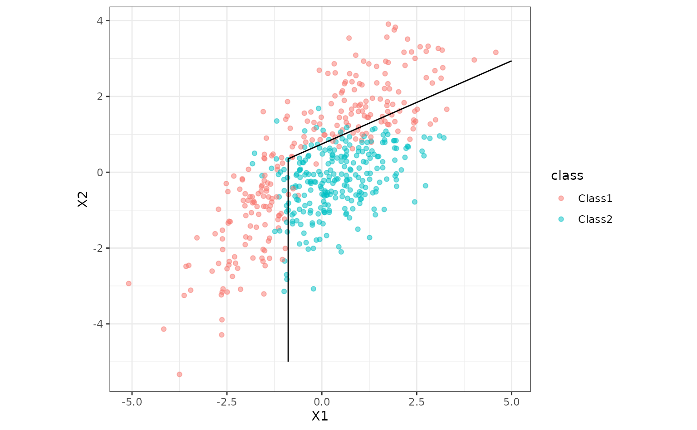

As an example, we’ll use a flexible discriminant analysis model of Hastie, Tibshirani, and Buja (1994). This fits a model that uses features generated by the multivariate adaptive regression spline (MARS) model of Friedman (1991). It is able to create class boundaries that are polygons and has built-in feature selection.
The parabolic data from the modeldata package will be
used to illustrate:
library(tidymodels)
library(discrim)
tidymodels_prefer()
theme_set(theme_bw())
data(parabolic, package = "modeldata")To create the model, the [discrim_flexible()] function is used along
with an engine of "earth" (which contains the methods to
use the MARS model). We’ll set the number of MARS terms to use but this
can be tuned via the methods in the tune package.
The fit() function estimates the model.
fit_xy() can be used if one does not wish to use the
formula method.
fda_mod <-
discrim_flexible(num_terms = 3) %>%
# increase `num_terms` to find smoother boundaries
set_engine("earth") %>%
fit(class ~ ., data = parabolic)
fda_mod## parsnip model object
##
## Call:
## mda::fda(formula = class ~ ., data = data, method = earth::earth,
## nprune = ~3)
##
## Dimension: 1
##
## Percent Between-Group Variance Explained:
## v1
## 100
##
## Training Misclassification Error: 0.136 ( N = 500 )Now let’s plot the class boundary by predicting on a grid of points then creating a contour plot for the 50% probability cutoff.
parabolic_grid <-
expand.grid(X1 = seq(-5, 5, length = 100),
X2 = seq(-5, 5, length = 100))
parabolic_grid <-
parabolic_grid %>%
bind_cols(
predict(fda_mod, parabolic_grid, type = "prob")
)
ggplot(parabolic, aes(x = X1, y = X2)) +
geom_point(aes(col = class), alpha = .5) +
geom_contour(data = parabolic_grid, aes(z = .pred_Class1), col = "black", breaks = .5) +
coord_equal()